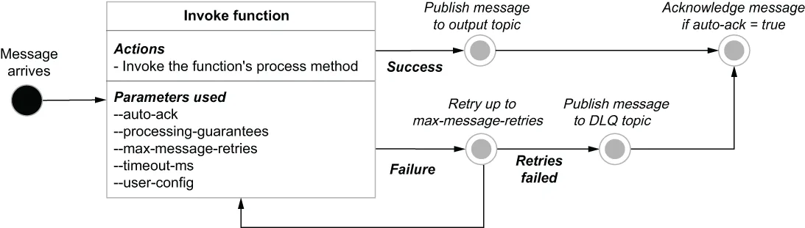

Before I conclude this chapter, I want to take a moment to document the flow of an individual message through a Pulsar function and tie the various stages back to the configuration parameters supplied when you first create or update a function, so you have a better understanding of how to configure your functions. The data flow inside a Pulsar function is depicted in the state machine shown in figure 4.11, along with the configuration properties that control the function behavior.
在结束本章之前，我想花点时间记录下一条单独的消息流经一个 Pulsar function 的全过程，并把各个阶段对应回你初次创建或更新一个函数时所提供的那些配置参数，以便你更好地理解该如何配置自己的函数。Pulsar function 内部的数据流被描绘在图 4.11 所示的状态机中，同时标注了控制该函数行为的各个配置属性。

Figure 4.11 The basic message flow for a Pulsar function running inside of a Pulsar worker
图 4.11 运行在 Pulsar worker 内部的一个 Pulsar function 的基本消息流
When a message arrives on any of the function’s configured input topics, the function’s process method is called with the message contents as an input parameter. If the function can successfully process the message without encountering any runtime exceptions, the value returned by the method call is published to the configured output topic, unless it is a void function, in which case nothing is published.
当一条消息到达该函数所配置的任一输入主题时，该函数的 process 方法就会被调用，并以消息内容作为输入参数。如果该函数能够在不遇到任何运行时异常的情况下成功处理该消息，那么该方法调用所返回的值就会被发布到配置好的输出主题上——除非它是一个 void 函数，在那种情况下不会发布任何东西。
However, if the function encounters a runtime exception, the message is retried up to the value configured in the max-message-retries parameter. If all these attempts fail, the message is routed to the configured dead-letter-queue topic (if any), so it can be retained for future examination. In either case, the message is acknowledged as consumed by the Pulsar function if the auto-ack flag was configured to true, allowing the next message to be processed.
然而，如果该函数遇到了运行时异常，该消息会被重试，最多重试到 max-message-retries 参数所配置的值。如果所有这些尝试都失败了，该消息就会被路由到配置好的死信队列主题（如果有的话），以便被保留下来供日后检查。在两种情况下，只要 auto-ack 标志被配置为 true，该消息都会被 Pulsar function 确认为已消费，从而允许下一条消息被处理。